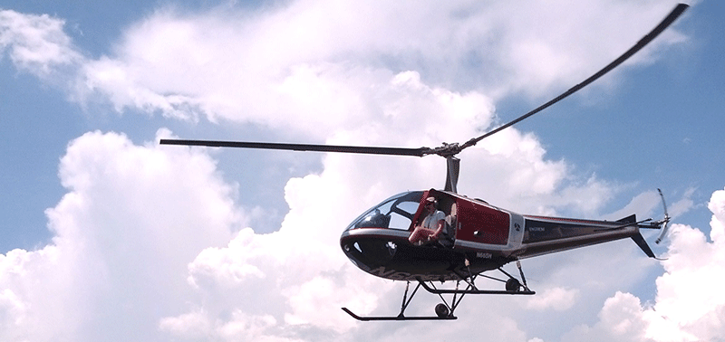
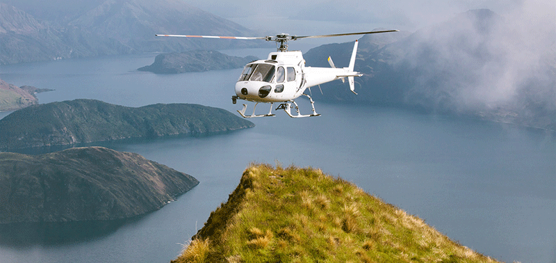

- 
- 


Aerial Photography
Whether you’re an amateur or professional, we can help you get the shots you want.
- Queenstown and Wanaka
1 hour photographic highlights - Queenstown and Wanaka
2 hour photographic highlights - Queenstown, Wanaka and Mount Cook / Aoraki premium
- Queenstown, Wanaka and Mount Cook / Aoraki sunset exceptional
- Custom aerial photography flights by the hour, day or week
– contact us to discuss your requirements
Note that aircraft doors can be removed by arrangement for professional assignments – extra cost incurred.
Fixed wing $350 per hour per passenger
Helicopter $350 per hour per passenger
Book Now Back to Flights